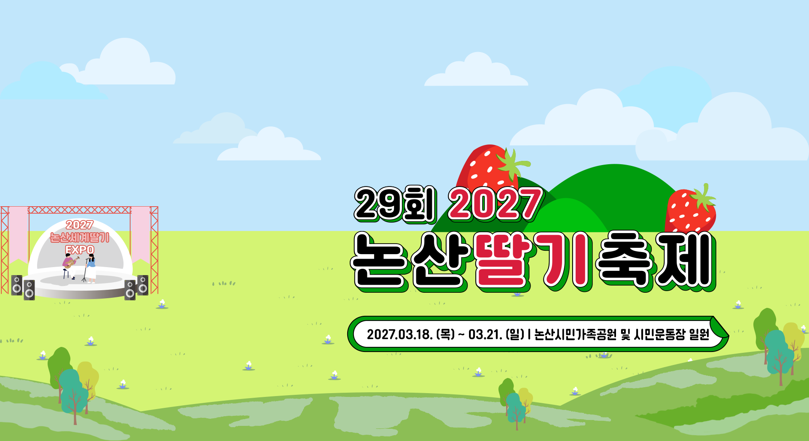

앞을 봐도 뒤를 봐도 딸기가 가득한
논산은 딸기천국?
세상에서 가장 많은 딸기를
볼 수 있는 곳, 논산
딸기는 과일 중 비타민C가 가장 높은 과일 중
하나로
특히 논산에서는 2020년대부터 딸기 품종 중
설향, 킹스베리,비타베리 3가지의 품종으로 생산하고 있습니다.
논산 딸기 축제 소개
맛, 향기, 당도 등에서 인정 받은
논산의 딸기를 소개합니다.

전국적으로 “딸기하면 논산”,
“논산 특산품하면 딸기”가 연상될 만큼
확실한 논산의 이미지 특산품으로 자리 매김을 하고 있습니다.

GALLERY
딸기 축제 이야기
사진으로 만나보는 논산 딸기축제 이야기

딸기의 나라인 논산에서는 맛과, 향기, 당도 등에서 완벽한 딸기를 직접 구매할 수 있고,
딸기 수확 체험을 통해 딸기를 직접 수확할 수 있습니다.
생딸기를 이용한 다양한 상콤달콤한 딸기 디저트 및 음식을 즐겨보세요!